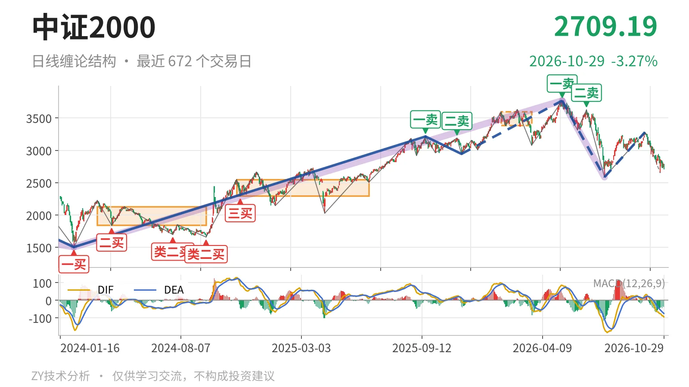
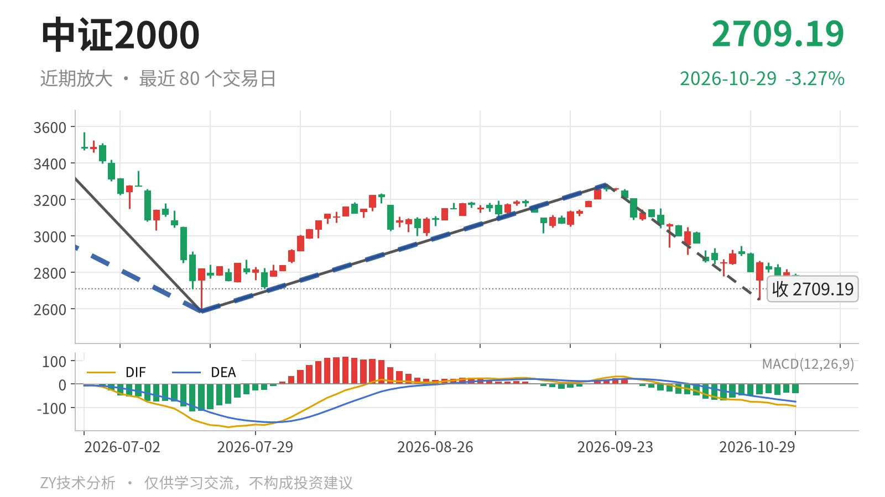

中证2000｜反抽2853点乏力，2585点类二买待定

最近日线中枢 3381.36—3593.19点，收盘位于中枢之下
一句话：日线下跌没有结束，反抽乏力，DIF零轴下运行。
🌊 走势结构：5月14日以来的日线下跌段仍在延续
当前仍处于5月14日以来的日线下跌线段内，更大级别上这段下跌也没有结束。7月21日至9月22日从2585.35点反弹到3280.29点，只有一笔，没有走成反向日线线段，因此无法终结前面的下跌段。9月22日开始的日线下跌笔还在延续，10月26日至10月29日反抽最高2853.30点，随后又回到2709.19点收盘。日线MACD的DIF为-94.7，仍在零轴之下，调整结构没有明显转强。

🧭 中枢位置：跌破上移后的日线笔中枢
最近日线笔中枢由2024年11月12日至2025年6月23日的2293.12—2547.90点上移到2026年1月26日至2026年3月23日的3381.36—3593.19点。最新收盘2709.19点已低于该中枢下沿3381.36点约672点，说明价格没有停留在中枢内，而是离开中枢回落。下方仍高于2022年4月27日至2023年6月19日线段中枢上沿2437.36点，因此当前处于高位笔中枢之下、历史线段中枢之上的中间位置。
📉 背驰比较：当前下跌力度较前段收缩
同向比较近两段日线下跌笔：6月23日至7月21日下跌笔绿柱面积810，DIF低点-164.2，终点2585.35点；9月22日至10月23日下跌笔暂到2649.26点，绿柱面积618，DIF低点-76.5。后者价格未创新低，DIF低点也未创新低，绿柱面积缩小，说明下跌力度没有扩大。但9月22日这笔还没结束，面积与DIF还会随新K线变化，只能作为当下的背驰观察。

🎯 买卖点：日线卖点逐级下移，类二买待验证
日线笔级别上，5月14日一卖在3768.08点，6月23日二卖在3626.48点，两个卖点一个比一个低。线段级别7月21日类二买在2585.35点，目前未被跌破，但其所在下跌线段没有结束，因此只能看作暂定的类二买。2025年11月21日线段级别二三买在2944.56点，之后价格创出3768.08点新高，现价又回到该买点下方，其结构意义更偏向上涨段内部买点。当前价格介于2944点与2585点之间。
🧱 关键位置观察：3381点回抽不进则三卖，2585点失守则买点降级
上方关键位是最近日线笔中枢下沿3381点。7月21日至9月22日反弹高点3280.29点已经低于3381点，若后续反抽仍不能站上3381点，回抽不进中枢，结构上构成三卖。下方关键位看2585点附近，若当前下跌笔继续下破2585.35点，暂定的线段级别类二买只能降级为较小级别；若重新站上3280点并形成反向日线线段，5月14日以来的下跌段才有结束可能。当前偏弱，弱在反弹未成线段、价格贴近9月22日以来下跌笔低点，且DIF仍在零轴下。
⚠️ 本文为基于公开行情数据的缠论技术结构记录，由程序自动计算并生成，仅供学习交流，不构成任何投资建议。市场有风险，投资需谨慎。